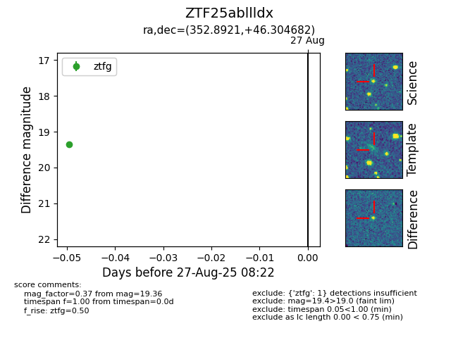

Target ZTF25abllldx at 2025-08-27 08:22, see:
FINK: fink-portal.org/ZTF25abllldx
Lasair: lasair-ztf.lsst.ac.uk/objects/ZTF25abllldx
ALeRCE: alerce.online/object/ZTF25abllldx
alt names
ZTF25abllldx (ztf,fink)
coordinates:
equatorial (ra, dec) = (352.8921,+46.30468)
galactic (l, b) = (108.8373,-14.36976)
photometry
last ztfg=19.36
1 ztfg detections
